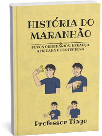

Glossário em Libras
Sinais dos conceitos do capítulo, entre eles o sinal de povos originários.
Assistir ao glossário ↓PROFEI · Universidade Estadual do Maranhão
Material didático bilíngue — Libras e português — sobre as raízes que formam a identidade maranhense: os povos originários de Upaon-Açu, a herança africana e a herança portuguesa. Com vídeos em Libras, glossários, atividades e linha do tempo, pensado para estudantes surdos dos anos finais do Ensino Fundamental.

Prefácio
Este livro convida você a enxergar o passado como um encontro entre diferentes povos que, ao longo dos séculos, construíram o que hoje chamamos de identidade maranhense.
Ao longo dos capítulos, você será conduzido por uma jornada que começa com os povos originários que habitavam o litoral brasileiro há muitos milhares de anos, com foco no espaço de Upaon-Açu. Em seguida, a presença africana como força viva de resistência, sabedoria e criação cultural. Por fim, a herança portuguesa, completando as raízes que compõem essa rica história.
Este livro foi escrito com compromisso com a acessibilidade. Concebido como projeto piloto no âmbito do Mestrado Profissional em Educação Inclusiva em Rede (PROFEI), pela Universidade Estadual do Maranhão, propõe-se a dialogar com todos os leitores, especialmente aqueles que utilizam a Língua Brasileira de Sinais. A narrativa visual e a linguagem acessível buscam produzir uma experiência acolhedora e inclusiva.
Ao reunir arqueologia, história social, cultura e educação, pretende-se que os leitores sejam capazes de reconhecer no outro e em si mesmos as múltiplas raízes que nos constituem. Este livro é um convite para olhar o passado com olhos mais atentos, plurais e humanos.
Que esta obra encontre os caminhos das escolas, das salas de aula e dos corações de todos aqueles que desejam compreender a história como espaço de pertencimento e encontro. Boa leitura!
Capítulo 01
Há cerca de seis mil anos, os povos originários já viviam no litoral da ilha de Upaon-Açu e mantinham relações com os povos do interior. Este capítulo apresenta essa história antiga, os sambaquis e a ocupação pré-colonial da ilha.
Capítulo 01 · Upaon-Açu — vídeo em Libras
Sinais dos conceitos do capítulo, entre eles o sinal de povos originários.
Assistir ao glossário ↓Produza um livro interativo: recortar, ordenar e colar as quatro páginas de "A História Antiga do Maranhão".
Baixar a atividade em PDF ↗Glossário — Capítulo 01
Capítulo 02
Entre 1755 e 1800, muitos africanos escravizados foram trazidos para o Maranhão, principalmente da região conhecida como Alta Guiné. Este capítulo trata da presença africana como força viva de resistência, sabedoria e criação cultural — do tambor de crioula ao bumba-meu-boi.
Capítulo 02 · Herança Africana — vídeo em Libras
Sinais dos conceitos do capítulo, entre eles o sinal de bumba-meu-boi do Maranhão.
Assistir ao glossário ↓Produza um livro interativo sobre a herança africana no Maranhão, identificando lugares e ordenando as páginas.
Baixar a atividade em PDF ↗Glossário — Capítulo 02
Capítulo 03
Franceses, ingleses e holandeses disputaram a região onde fica a ilha de Upaon-Açu. Depois da Batalha de Guaxenduba, em 1614, os portugueses passam a ocupar a ilha, e em 1621 é criado o Estado do Maranhão e Grão-Pará. Este capítulo completa as raízes que compõem a história maranhense.
Capítulo 03 · Herança Portuguesa — vídeo em Libras
Sinais dos conceitos do capítulo, entre eles a bandeira do Maranhão.
Assistir ao glossário ↓Produza um livro interativo sobre a herança portuguesa e pinte a bandeira do Maranhão com as cores corretas.
Baixar a atividade em PDF ↗Glossário — Capítulo 03
Linha do tempo
Linha do tempo — vídeo em Libras
Para o professor
Manual on-line com orientações para aplicar o material em sala de aula: como conduzir a leitura dos capítulos, usar os glossários em Libras e desenvolver as atividades de flipbook com a turma.
Sobre o projeto
Este projeto foi desenvolvido no Mestrado Profissional em Educação Inclusiva em Rede (PROFEI) pela Universidade Estadual do Maranhão. Dele resultou este material educativo e acessível, que apresenta a História do Maranhão em Libras.
É um projeto piloto com ênfase em educação patrimonial, com foco em Upaon-Açu, povos originários e herança africana. Oferece conteúdos bilíngues em Libras e português, vídeos, imagens e atividades pensados para estudantes surdos do ensino fundamental maior.
O material foi aplicado em oficinas pedagógicas em Libras em escolas da rede municipal de Paço do Lumiar, no Maranhão.
Sobre o autor
Pesquisador e professor intérprete de Libras pelo governo do Maranhão e pela prefeitura de Paço do Lumiar. Mestre em Educação Inclusiva pela UEMA, na linha Educação Especial na Perspectiva da Educação Inclusiva, e integrante do Grupo de Estudos e Pesquisas Interdisciplinares em Educação (GEPINE).
Graduado em História e em Letras–Libras, com pós-graduação em Libras, atua desde 2010 como tradutor e intérprete de Libras.
Referências
ABREU, Marilande Martins. Reflexões sobre a ancestralidade africana do Tambor de Mina do Maranhão: interlocuções e relações decorrentes do trabalho de campo. Religião & Sociedade, v. 41, n. 2, p. 231-252, ago. 2021.
ASSUNÇÃO, Matthias Röhrig. A memória do tempo de cativeiro no Maranhão. Tempo, v. 15, n. 29, p. 67-110, dez. 2010.
BANDEIRA, Arkley Marques. Ocupações humanas pré-coloniais na Ilha de São Luís – MA: inserção dos sítios arqueológicos na paisagem, cronologia e cultura material cerâmica. Tese (Doutorado) — Museu de Arqueologia e Etnologia, Universidade de São Paulo, São Paulo, 2013.
BANDEIRA, Arkley Marques. Os Tupis na Ilha de São Luís – Maranhão: fontes históricas e a pesquisa arqueológica. História Unicap, Recife, v. 2, n. 3, p. 79-98, 2015.
BANDEIRA, Arkley Marques. Distribuição espacial dos sítios Tupi na Ilha de São Luís – Maranhão. Cadernos do LEPAARQ, v. 12, n. 24, p. 59-96, 2015.
BANDEIRA, Arkley Marques. Os sambaquis na Ilha de São Luís – MA: processo de formação, cultura material cerâmica e cronologia. Revista Memorare, v. 5, n. 1, p. 315-360, 2018.
BANDEIRA, Arkley Marques. Arqueologia pública e a preservação do patrimônio cultural pré-colonial maranhense. Patrimônio e Memória, v. 15, n. 1, p. 238-265, 2019.
BARROSO, Matheus. Sons de resistência e identidade: conheça a história do Bumba Meu Boi do Maranhão e dos sotaques nos folguedos. G1 Maranhão, 22 jun. 2024.
BARROSO JÚNIOR, Reinaldo dos Santos. Nas rotas do atlântico equatorial: tráfico de escravos rizicultores da Alta-Guiné para o Maranhão (1770-1800). Dissertação (Mestrado em História) — UFBA, Salvador, 2009.
BARROSO JÚNIOR, Reinaldo dos Santos. A memória do cativeiro e os braços do trabalho: dicionários, escravidão, escravizados e suas ocupações ao final do período colonial no Maranhão (1760-1822). Tese (Doutorado Profissional em História) — UEMA, São Luís, 2025.
CARDOSO, Jessica Mendes; SILVA, Renata Estevam da; ZAMPARETTI, Bruna Cataneo. Sambaquis: uma história antes do Brasil — guia didático. São Paulo: MAE/USP, 2019.
CARDOSO, Alírio. A conquista do Maranhão e as disputas atlânticas na geopolítica da União Ibérica (1596-1626). Revista Brasileira de História, v. 31, n. 61, p. 317-338, 2011.
CARDOSO, Alírio. Beschrijving van Maranhão: a Amazônia nos relatórios holandeses na época da Guerra de Flandres (1621-1644). Topoi, Rio de Janeiro, v. 18, n. 35, p. 406-428, 2017.
CORREA, Helidacy Maria Muniz; RODRIGUES, José Manuel Damião Soares. São Luís na política imperial ibérica (1612-1654). Outros Tempos, v. 23, n. 41, p. 530-568, 2026.
COSTA, Yuri Michael Pereira. Sociedade e escravidão no Maranhão do século XIX. Revista Brasileira de História & Ciências Sociais, v. 10, n. 20, 2018.
FIRMO, Érico. A época em que o Ceará não era parte do "Brasil". O Povo, Fortaleza, 17 jan. 2021.
FRÓES, Rafaelle. Maranhão tem a 2ª maior população quilombola do Brasil, aponta levantamento inédito do IBGE. G1 MA, 27 jul. 2023.
GUIMARÃES, Eduardo. A língua portuguesa no Brasil. Ciência e Cultura, São Paulo, v. 57, n. 2, abr./jun. 2005.
IPHAN. Festival Bumba Meu Boi de Zabumba garante transmissão da cultura afro-brasileira. 22 set. 2016.
LIMA, Luzenilton Dias. Águas boas de Guaxenduba: memórias de Icatu, Maranhão e o ensino de História local. São Luís, 2021.
LOPES, Carlos. O Kaabu e os seus vizinhos: uma leitura espacial e histórica explicativa de conflitos. Afro-Ásia, Salvador, n. 32, 2005.
MAGALHÃES, Júlio. Tambor de Crioula. Fotodoc, 15 mar. 2023.
MARQUES, Matheus Andrade. O reggae em São Luís: identidade cultural e o surgimento da Jamaica brasileira. Geopauta, v. 7, p. 1-19, 2023.
MEIRELES, Mario M. Pequena história do Maranhão. 3. ed. São Luís: SIOGE, 1970.
MONTEIRO, John. Tupis, Tapuias e Historiadores: estudos de história indígena e do indigenismo. Campinas: Unicamp, 2001.
NASCIMENTO, Elisabete. Baobá: origens diaspóricas. In: Monumento à diáspora africana no Maranhão. São Paulo: Quereres Editora, 2023.
OLIVEIRA, Luciana de Fátima. Estado do Maranhão e Grão-Pará: primeiros anos de ocupação, expansão e consolidação do território. In: SIMPÓSIO NACIONAL DE HISTÓRIA, 26., 2011, São Paulo. Anais. São Paulo: ANPUH, 2011.
POVO DO FUNDO. Ritmos da História Antiga de Upaon-Açu. Vídeo, 28 jun. 2021.
RIBEIRO, Claudio Silva. Culturas e identidades dos afro-brasileiros a partir do Maranhão. São Luís: UEMA, 2022.
RODRIGUES, Aryon Dall'Igna. A classificação do tronco linguístico tupi. Revista de Antropologia, São Paulo, v. 12, n. 1-2, p. 99-104, 1964.
ROCHA, Abigail Vale. Transformações e usos do patrimônio no Centro Histórico de São Luís (Maranhão). Dissertação (Mestrado em Ciências Sociais) — UFMA, São Luís, 2025.
SERRA, Flávia Pereira; RAMOS, Conceição de Maria de A. Falares africanos no Maranhão: um glossário afro-maranhense. Afluente, v. 6, n. 19, UFMA/CCEL, 2021.
SILVA, Abrahão Sanderson Nunes Fernandes da. Bacanga, Paço do Lumiar e Panaquatira: estudo das indústrias líticas presentes em sambaquis na Ilha de São Luís. Tese (Doutorado em Arqueologia), São Paulo, 2012.
SILVA, Mariana Queen Cardoso da. Quilombo Urbano Liberdade, patrimônio afro de São Luís – MA. Dissertação (Mestrado) — UFMA, São Luís, 2023.
SILVA, Marcos Tadeu Nascimento da. Educação patrimonial: arqueologia no ensino da História Antiga de Upaon-Açu (São Luís – MA). Dissertação (Mestrado em História) — UEMA, São Luís, 2021.
VERAS, Tiago. História do Maranhão em Libras: povos originários, herança africana e portuguesa. Produto educacional do Mestrado Profissional em Educação Inclusiva em Rede (PROFEI), Universidade Estadual do Maranhão, 2026. Bilíngue: história em português e Libras.
Material de uso educacional. Para usar em formações, oficinas ou projetos institucionais, entre em contato pelo WhatsApp (98) 98825-3316 ou pelo Instagram @tiagotils.